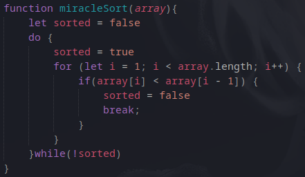

> miracle sort relies on the logic of miracles and divine power.
> Unlike other sorts nothing actually happens for the sorting algorithm, you just have to wait for a /miracle/ and check back every now and then to see if anything has changed...
> there are none x)
the code is as follows (all it does is check if the array is sorted as there's no actual sorting algorithm):
